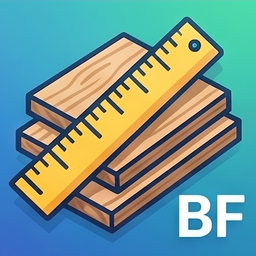

Board Foot Calculator
Board Foot Calculator is a simple and easy-to-use calculator for estimating board feet and lumber cost.
Enter the thickness, width, length, and quantity of your lumber, and the app automatically calculates the total board feet.
You can also enter a price per board foot to estimate the total cost of your wood or lumber project.
This app is useful for woodworking, lumber shopping, sawmill use, DIY projects, and estimating wood material costs.
Features
- Calculate board feet quickly
- Enter thickness, width, and length
- Set the quantity of boards or pieces
- Automatically calculate total board feet
- Enter price per board foot
- Estimate total lumber cost
- Useful for woodworking and lumber projects
- Simple input fields for fast calculations
- Clear results and start a new calculation easily
- Copy or review calculation results
- Simple and clean design
- Optional ad removal
Frequently Asked Questions
-
Q: What does this app calculate?
A: The app calculates board feet based on lumber thickness, width, length, and quantity.
-
Q: What is a board foot?
A: A board foot is a common lumber volume measurement equal to a board that is 1 inch thick, 12 inches wide, and 1 foot long.
-
Q: How do I enter lumber dimensions?
A: Enter the thickness, width, length, and quantity of the boards you want to calculate.
-
Q: Does the app calculate lumber cost?
A: Yes. You can enter a price per board foot, and the app will estimate the total cost.
-
Q: Can I calculate multiple boards at once?
A: Yes. Enter the quantity of boards or pieces, and the app will include it in the total board foot calculation.
-
Q: Is this app useful for woodworking?
A: Yes. The app is useful for woodworking, lumber shopping, sawmill use, and DIY wood projects.
-
Q: What formula does the app use?
A: The app uses the standard board foot formula: thickness in inches × width in inches × length in feet × quantity ÷ 12.
-
Q: Can I remove ads?
A: Yes. You can remove banner ads with an optional in-app purchase.
-
Q: Do I need an internet connection?
A: The board foot calculation itself works offline. An internet connection may be required to load ads or complete in-app purchases.
📩 Contact
If you have any questions or encounter issues, feel free to contact us:
← Back to Support Center